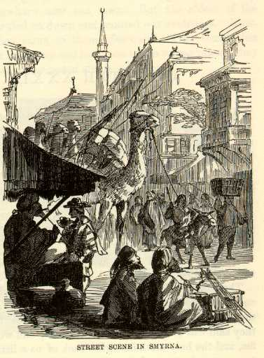

SmyrnaThis seaport of Smyrna, our first notable acquaintance in Asia, is a closely packed city of one hundred and thirty thousand inhabitants, and, like Constantinople, it has no outskirts. It is as closely packed at its outer edges as it is in the centre, and then the habitations leave suddenly off and the plain beyond seems houseless. It is just like any other Oriental city. That is to say, its Moslem houses are heavy and dark, and as comfortless as so many tombs; its streets are crooked, rudely and roughly paved, and as narrow as an ordinary staircase; the streets uniformly carry a man to any other place than the one he wants to go to, and surprise him by landing him in the most unexpected localities; business is chiefly carried on in great covered bazaars, celled like a honeycomb with innumerable shops no larger than a common closet, and the whole hive cut up into a maze of alleys about wide enough to accommodate a laden camel, and well calculated to confuse a stranger and eventually lose him; every where there is dirt, every where there are fleas, every where there are lean, broken-hearted dogs; every alley is thronged with people; wherever you look, your eye rests upon a wild masquerade of extravagant costumes; the workshops are all open to the streets, and the workmen visible; all manner of sounds assail the ear, and over them all rings out the muezzin's cry from some tall minaret, calling the faithful vagabonds to prayer; and superior to the call to prayer, the noises in the streets, the interest of the costumes--superior to every thing, and claiming the bulk of attention first, last, and all the time--is a combination of Mohammedan stenches, to which the smell of even a Chinese quarter would be as pleasant as the roasting odors of the fatted calf to the nostrils of the returning Prodigal. Such is Oriental luxury--such is Oriental splendor! We read about it all our days, but we comprehend it not until we see it. |